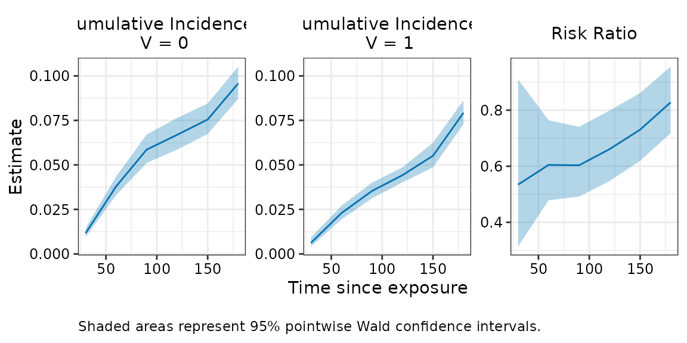
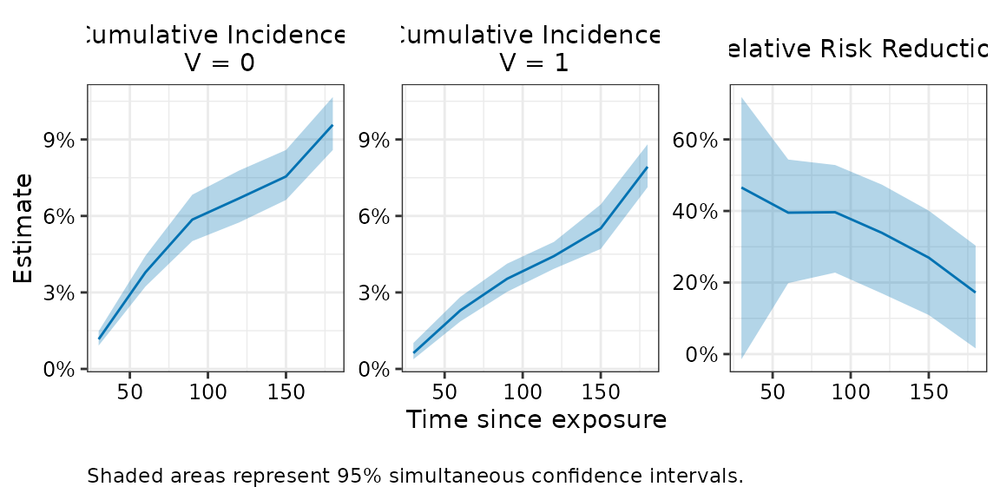
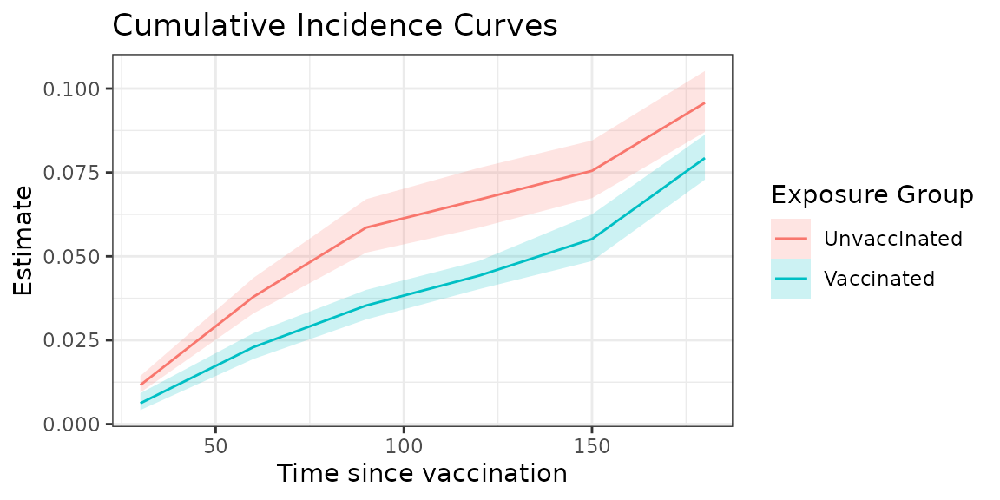
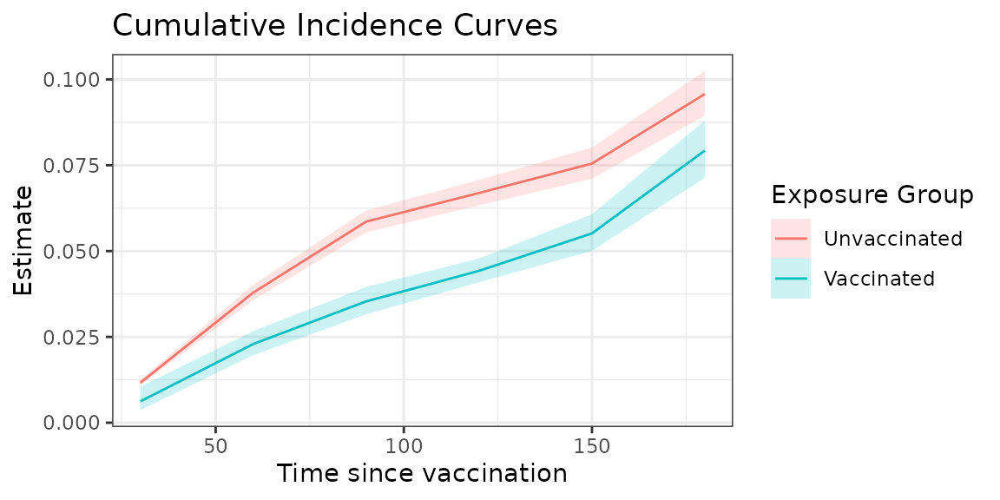

Introduction
The nomatch package is designed to use G-computation
style estimation to compute estimates of marginal cumulative incidence
in observational cohort studies with a binary exposure and a
time-to-event outcome. The approach aligns with the target trial
emulation framework (Hernan 2016) and provides an alternative to
matching methods, which can suffer from substantial efficiency loss.
Estimation involves fitting two exposure-specific Cox models which
adjust for baseline confounders. Predictions from these models are used
to compute marginal cumulative incidence under interventions of exposure
and no exposure. Effect measures such as risk differences, risk ratios,
and relative risk reduction are also provided.
Usage
We examine the use of nomatch to produce estimates of
effectiveness for a binary exposure. The package can be loaded as
follows:
We will illustrate the use of the package using a simple simulated
dataset, simdata, included in the package. For exposition,
we will assume this dataset represents data from an observational
vaccine study. In practice, data from other disease settings can be used
as well. The first few rows of simdata can be viewed as
follows:
simdata <- as_tibble(simdata) #for prettier printing
#View data
head(simdata)
#> # A tibble: 6 × 7
#> ID x1 x2 V D_obs Y event
#> <int> <int> <int> <int> <dbl> <dbl> <dbl>
#> 1 1 1 7 1 2 92 0
#> 2 2 0 7 0 NA 210 0
#> 3 3 0 11 1 35 210 0
#> 4 4 0 10 1 6 210 0
#> 5 5 1 11 0 NA 210 0
#> 6 6 1 7 0 NA 90 0The data contains one row per individual (ID) and a set
of individual baseline covariates (x1, x2).
Information on an individual’s exposure is encompassed in 1) their
vaccination status (V), a binary indicator with values
1 = vaccinated, 0 = unvaccinated and 2) their time to
receiving vaccination (D_obs), a numeric value for
vaccinated individuals and NA for unvaccinated individuals.
The data also includes right-censored survival
outcomes(Y, event) where Y represents
follow-up time for an outcome (e.g. infection or death), and
event indicates whether the individual experienced the
event with values 1 = event, 0 = censored.
We will assume that time to vaccination D_obs and time
to outcome Y are measured relative to a calendar date of
study start because calendar time is often an important time scale in
vaccine studies due to changing infection dynamics. In other settings,
the relevant time scale may be time since enrollment or other meaningful
event, or age. Regardless of the choice of time scale, the same time
origin should be used to define the time to exposure and time to outcome
variables, as well as the baseline covariates.
Estimating cumulative incidence
To learn about the real-world effectiveness of an intervention, we can try to compare the incidence of the endpoint of interest at a fixed time after exposure when individuals are assigned to an active or control exposure. We will assume that the exposed group consists of initiators (e.g vaccinated individuals) and that the non-exposed group consists of non-initiators (e.g. unvaccinated individuals). An analytical challenge in this setting is that the start of follow-up for the unexposed group is not well-defined. One way to circumvent this issue is to imagine that we can assign individuals in a certain covariate group to receive an exposure (or no exposure) on a certain day. In this case, the natural start of follow-up is the assigned day for receiving the exposure, just as start of follow-up in a randomized trial is the day of randomization. This allows us to define cumulative incidences for each intervention-day and for each covariate group. These day- and covariate-specific cumulative incidences can then be marginalized (e.g. over the distribution of exposure days and covariates among those observed to be exposed) to obtain overall cumulative incidence estimates.
We can invoke the nomatch function to compute these
marginal cumulative incidences. Here, we need to provide several types
of arguments:
data, outcome_time, outcome_status, exposure, exposure_time, covariates: Primary arguments providing the dataset and the names of the variables in the dataset that describe the outcome, exposure, and covariates to adjust for.immune_lag, timepoints: Arguments that specify what cumulative incidences to compute. The first,immune_lag, is used to compute cumulative incidences that ignore events that occur withinimmune_lagdays; the population of interest is defined to be the subset of individuals who would remain endpoint-freeimmune_lagdays after exposure. This is often used in vaccine studies because the vaccine takes time to induce an immune response and become effective. We will setimmune_lag = 14(2 weeks) for our pretend vaccine study, but this can also be set to0when not relevant to the setting of interest. The second,timepoints, specifies the timepoints of interest for evaluating cumulative incidence. Here we’ve specified to compute the cumulative incidence of infection/severity outcomes occurring within30, 60, 90, ..180days after vaccination.boot_reps: Argument for the number of bootstrap replications to use since confidence intervals for the estimated cumulative incidences and effect measures are based on bootstrapping procedures. Note that we use a small number here so the example runs quicly, butboot_reps = 1000is recommended to construct reliable confidence intervals for interpretation. By default, Wald-style bootstrap confidence intervals and p-values are returned.
# Compute cumulative incidence
fit <- nomatch(data = simdata,
outcome_time = "Y",
outcome_status = "event",
exposure = "V",
exposure_time = "D_obs",
covariates = c("x1", "x2"),
immune_lag = 14,
timepoints = seq(30, 180, by = 30),
boot_reps = 10)
#> Bootstrapping 10 samples...
#> Time difference of 3.47804 secsWe can print the relative risk reduction (i.e vaccine effectiveness) estimates for our simulated dataset.
print(fit, effect = "relative_risk_reduction")
#>
#> Relative Risk Reduction Estimates
#> ==================================================
#> Call: nomatch(data = simdata, outcome_time = "Y", outcome_status = "event",
#> exposure = "V", exposure_time = "D_obs", covariates = c("x1",
#> "x2"), immune_lag = 14, timepoints = seq(30, 180, by = 30),
#> boot_reps = 10)
#>
#> Result:
#> Timepoint Estimate 95% Wald CI: Lower 95% Wald CI: Upper Wald p-value
#> 1 30 0.466 0.0902 0.686 0.086340
#> 2 60 0.395 0.2359 0.521 0.000925
#> 3 90 0.397 0.2594 0.508 0.000148
#> 4 120 0.339 0.2011 0.453 0.000448
#> 5 150 0.269 0.1387 0.380 0.001338
#> 6 180 0.172 0.0444 0.283 0.018627
#>
#> Use summary() for more details
#> Use plot() to visualize resultsThe cumulative incidence estimates (cuminc_0 for
unexposed and cuminc_1 for exposed) ) and other effects
(risk_difference, risk_ratio, and
relative_risk_reduction) are also stored within the fitted
object. These can be examined via fit$estimates.
If all confounders are adjusted for, the resulting cumulative incidence/effect estimates can be interpreted as the cumulative incidences or effect that would be observed in a clinical trial in which participants 1) are similar to those observed to be exposed and 2) who enroll into the study such that the distribution of enrollments times matches the distribution of observed exposure times.
Additional details about estimation approach
Internally, the cumulative incidence estimates are computed by
fitting two Cox models- one model for the unexposed and one model for
the exposed. In the model for the unexposed, time to the endpoint of
interest is measured relative to the study start (or chosen time
origin). The unexposed model includes all individuals, where exposed
individuals are censored at the time of exposure, and adjusts for
covariates. In the model for the exposed, the time to endpoint of
interest is measured relative to the time of exposure. The model
includes all exposed individuals at risk immune_lag days
after exposure, flexibly adjusting for the time of exposure (by default,
using natural cubic splines with four degrees of freedom), as well
baseline covariates. A summary of the estimation approach and fitted
models can be obtained by
summary(fit)
#>
#> ======================================================================
#> Analysis Summary
#> ======================================================================
#>
#> Method: nomatch (G-computation)
#> Evaluation times: 30, 60, 90, 120, 150, 180
#> Immune lag: 14
#> Adjusted for: x1, x2
#>
#> Bootstrap: 10 replicates
#> Confidence level: 95 %
#> Successful samples: 10-10 (range across timepoints)
#>
#> ----------------------------------------------------------------------
#> Sample:
#> ----------------------------------------------------------------------
#> N total: 10000
#> Number of events: 1007
#>
#> N exposed: 4112
#> N exposed at-risk <immune_lag> days after exposure: 4045
#>
#> Distribution of exposure times among at-risk <immune_lag> days after exposure:
#> Range: 1 - 194 | Median (IQR): 18 (11 - 32) | Mean: 25.5
#>
#> ----------------------------------------------------------------------
#> Model for unexposed:
#> ----------------------------------------------------------------------
#> N = 10000 | Number of events = 664
#>
#> Use '$model_0' to see model details.
#>
#> ----------------------------------------------------------------------
#> Model for exposed:
#> ----------------------------------------------------------------------
#> N = 4045 | Number of events = 265
#>
#> Use '$model_1' to see model details.
#>
#> ======================================================================These Cox models are used to predict day and covariate specific
cumulative incidences which are then, by default, marginalized over the
observed distribution of exposure times and covariates in the exposed.
The weights used for marginalization are returned in the
$weights component of the fitted object.
Plotting cumulative incidence curves
We can make a quick panel plot of the cumulative incidence and
vaccine effectiveness estimates over time using plot().
Note that if cumulative incidence curves are of interest, it is
recommended to provide a fine grid of timepoints to produce
smooth curves. Our example plot will be somewhat crude due to the small
number of timepoints used in the function call.
plot(fit, effect = "relative_risk_reduction")
Plotting simultaneous confidence intervals
Note that in the plot above, we have plotted the pointwise confidence
intervals, which are just the usual 95% confidence intervals plotted at
each timepoint. If we would instead like to make inference on the entire
curve, we need to construct simultaneous confidence intervals. We can do
this using the add_simulatenous_ci() function which
computes simultaneous confidence intervals given an existing fitted
object, provided that the bootstrap samples were saved in the object
(i.e. keep_boot_samples = TRUE, the default). This function
returns the original fitted object updated with simultaneous confidence
intervals which we now save in a new object.
#Compute simultaneous CI
fit_with_simul <- add_simultaneous_ci(fit, seed = 1234)The simultaneous confidence intervals are now stored in the fitted object.
fit_with_simul
#>
#> Risk Ratio Estimates
#> ==================================================
#> Call: nomatch(data = simdata, outcome_time = "Y", outcome_status = "event",
#> exposure = "V", exposure_time = "D_obs", covariates = c("x1",
#> "x2"), immune_lag = 14, timepoints = seq(30, 180, by = 30),
#> boot_reps = 10)
#>
#> Result:
#> Timepoint Estimate 95% Wald CI: Lower 95% Wald CI: Upper Wald p-value
#> 1 30 0.534 0.314 0.910 0.086340
#> 2 60 0.605 0.479 0.764 0.000925
#> 3 90 0.603 0.492 0.741 0.000148
#> 4 120 0.661 0.547 0.799 0.000448
#> 5 150 0.731 0.620 0.861 0.001338
#> 6 180 0.828 0.717 0.956 0.018627
#> 95% Simul CI: Lower 95% Simul CI: Upper
#> 1 0.282 1.012
#> 2 0.457 0.801
#> 3 0.472 0.772
#> 4 0.527 0.830
#> 5 0.600 0.890
#> 6 0.697 0.983
#>
#> Use summary() for more details
#> Use plot() to visualize resultsWe can also plot the cumulative incidence curves with simultaneous
confidence intervals by providing the ci_type argument.
Note that the simultaneous confidence intervals must be computed before
plotting; otherwise, the call will error.
#Plot simultaneous confidence bands
plot(fit_with_simul , effect = "relative_risk_reduction", ci_type = "simul") 
The simultaneous confidence intervals indicate that if we were to repeatedly construct simultaneous confidence intervals on new samples of data, then 95% of the constructed simultaneous confidence bands would contain the true cumulative inicdence/effectiveness curve.
Creating custom plots
Often, users may wish to create their own custom plots. This can be
done by extracting the estimates from the fitted object and creating a
long tidy-style data frame. The utility function
estimates_to_df() takes the estimates
component of the fitted object and reformats it as a long dataset that
can be used for plotting.
plot_data <- estimates_to_df(fit)
head(as_tibble(plot_data))
#> # A tibble: 6 × 8
#> t0 term estimate wald_lower wald_upper wald_se wald_pval wald_n
#> <dbl> <chr> <dbl> <dbl> <dbl> <dbl> <dbl> <dbl>
#> 1 30 cuminc_0 0.0116 0.00942 0.0144 0.109 NA 10
#> 2 30 cuminc_1 0.00622 0.00419 0.00922 0.202 NA 10
#> 3 30 risk_difference -0.00542 -0.00981 -0.00103 0.00224 0.0155 10
#> 4 30 risk_ratio 0.534 0.314 0.910 0.271 0.0863 10
#> 5 30 relative_risk_r… 0.466 0.0902 0.686 0.271 0.0863 10
#> 6 60 cuminc_0 0.0379 0.0330 0.0435 0.0737 NA 10For example, we can create a plot that overlays the cumulative incidence estimates for the two exposure types as follows:
plot_data |>
filter(term %in% c("cuminc_0", "cuminc_1")) |>
ggplot(aes(x = t0, y = estimate, color = term, fill = term)) +
geom_line() +
geom_ribbon(aes(ymin = wald_lower, ymax = wald_upper), alpha = 0.2, linewidth = 0) +
theme_bw() +
scale_color_discrete(breaks = c("cuminc_0", "cuminc_1"), labels = c("Unvaccinated", "Vaccinated"))+
scale_fill_discrete(breaks = c("cuminc_0", "cuminc_1"), labels = c("Unvaccinated", "Vaccinated"))+
labs(x = "Time since vaccination",
y = "Estimate",
title = "Cumulative Incidence Curves",
color = "Exposure Group",
fill = "Exposure Group")
Comparison with matching
The G-computation estimation approach is generally expected to produce similar point estimates as a simple analysis using rolling-cohort matching in which exposed individuals are matched to an eligible unexposed individual at their time of exposure on key covariates. An advantage of the G-computation estimation approach is that it offers greater precision, which may be pecially valuable when the data involves smaller samples sizes or rare endpoints. To aid comparison of the two approaches, we provide a simple implementation of a matching approach that uses a rolling cohort design with 1:1 exact matching and Kaplan Meier estimation for computing marginal cumulative incidences. Note that the functions for implementing matching may take a while to run on large datasets. They are also intentionally limited in scope, serving only to provide a simple matching comparison.
# ------------------------------------------------------------------------------
# 3. Compare results with matching estimator
matched_cohort <- match_rolling_cohort(data = simdata,
outcome_time = "Y",
exposure = "V",
exposure_time = "D_obs",
matching_vars = c("x1", "x2"),
id_name = "ID",
seed = 5678)
matched_data <- matched_cohort[[1]]
fit_matching <-matching(matched_data = matched_data,
outcome_time = "Y",
outcome_status = "event",
exposure = "V",
exposure_time = "D_obs",
immune_lag = 14,
timepoints = seq(30, 180, by = 30),
boot_reps = 10)
#> Bootstrapping 10 samples...
#> Time difference of 1.429927 secs
fit_matching
#>
#> Risk Ratio Estimates
#> ==================================================
#> Call: matching(matched_data = matched_data, outcome_time = "Y", outcome_status = "event",
#> exposure = "V", exposure_time = "D_obs", immune_lag = 14,
#> timepoints = seq(30, 180, by = 30), boot_reps = 10)
#>
#> Result:
#> Timepoint Estimate 95% Wald CI: Lower 95% Wald CI: Upper Wald p-value
#> 1 30 0.497 0.218 1.137 0.23324
#> 2 60 0.517 0.374 0.715 0.00346
#> 3 90 0.611 0.413 0.905 0.05192
#> 4 120 0.671 0.499 0.904 0.03018
#> 5 150 0.710 0.571 0.884 0.00935
#> 6 180 0.775 0.616 0.976 0.05517
#>
#> Use summary() for more details
#> Use plot() to visualize results
# Plot matching vs proposed estimator - nomatch tends to have similar point estimates but narrower
# confidence intervals
compare_ve_fits(fit_matching, fit, effect = "relative_risk_reduction", labels = c("Matching", "nomatch (G-computation)"))
Session Information
#> R version 4.5.2 (2025-10-31)
#> Platform: x86_64-pc-linux-gnu
#> Running under: Ubuntu 24.04.3 LTS
#>
#> Matrix products: default
#> BLAS: /usr/lib/x86_64-linux-gnu/openblas-pthread/libblas.so.3
#> LAPACK: /usr/lib/x86_64-linux-gnu/openblas-pthread/libopenblasp-r0.3.26.so; LAPACK version 3.12.0
#>
#> locale:
#> [1] LC_CTYPE=C.UTF-8 LC_NUMERIC=C LC_TIME=C.UTF-8
#> [4] LC_COLLATE=C.UTF-8 LC_MONETARY=C.UTF-8 LC_MESSAGES=C.UTF-8
#> [7] LC_PAPER=C.UTF-8 LC_NAME=C LC_ADDRESS=C
#> [10] LC_TELEPHONE=C LC_MEASUREMENT=C.UTF-8 LC_IDENTIFICATION=C
#>
#> time zone: UTC
#> tzcode source: system (glibc)
#>
#> attached base packages:
#> [1] stats graphics grDevices utils datasets methods base
#>
#> other attached packages:
#> [1] nomatch_0.0.0.9000 dplyr_1.1.4 ggplot2_4.0.1 tibble_3.3.0
#>
#> loaded via a namespace (and not attached):
#> [1] Matrix_1.7-4 gtable_0.3.6 jsonlite_2.0.0 compiler_4.5.2
#> [5] tidyselect_1.2.1 parallel_4.5.2 jquerylib_0.1.4 splines_4.5.2
#> [9] systemfonts_1.3.1 scales_1.4.0 textshaping_1.0.4 ggh4x_0.3.1
#> [13] yaml_2.3.11 fastmap_1.2.0 lattice_0.22-7 R6_2.6.1
#> [17] labeling_0.4.3 generics_0.1.4 knitr_1.50 MASS_7.3-65
#> [21] desc_1.4.3 bslib_0.9.0 pillar_1.11.1 RColorBrewer_1.1-3
#> [25] rlang_1.1.6 utf8_1.2.6 cachem_1.1.0 xfun_0.54
#> [29] fs_1.6.6 sass_0.4.10 S7_0.2.1 cli_3.6.5
#> [33] pkgdown_2.2.0 withr_3.0.2 magrittr_2.0.4 digest_0.6.39
#> [37] grid_4.5.2 lifecycle_1.0.4 vctrs_0.6.5 evaluate_1.0.5
#> [41] glue_1.8.0 farver_2.1.2 ragg_1.5.0 survival_3.8-3
#> [45] rmarkdown_2.30 tools_4.5.2 pkgconfig_2.0.3 htmltools_0.5.9